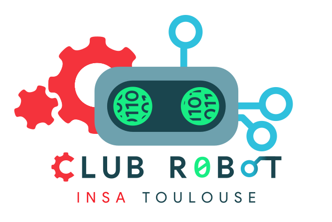

Introduction
Ce site internet contient la documentation du Club Robot de l'INSA Toulouse pour les parties électronique et informatique du robot.
Ce livre est rédigé avec md-book.
Le but de ce livre est de te guider pour l'installation des différents outils permettant de programmer au Club Robot.
Ce livre ne documentera pas le code du club, mais peut documenter les différents fichiers d'un projet. Il est là pour servir de référence en cas de problème et de questions vis à vis d'un fichier.
Sa lecture est préliminaire à la formation organisée en début d'année, et son but est de nous faire gagner du temps en vous faisant installer à la maison les outils de dévellopement.
Enfin, son écriture a commencé après Chocobot à la coupe de france de 2018 (Robot Cities).
Pour la suite du "livre", si on s'est occupé de t'installer linux sur ton ordinateur ou si tu as une version de Ubuntu récente (>16.04) tu peux te considérer comme un utilisateur "standard" et tu n'as pas besoin de suivre les sections pour les power user.
Si jamais tu trouves des fautes d'orthographes, des erreurs, des remarques ou toutes autres formes de contribution à faire n'hésite surtout pas. Les sources de ce livre sont sur ce repertoire github, et il n'y a pas besoin de git pour y apporter des modifications simples : l'interface en ligne de github te permet de modifier les fichiers textes et de créer ton premier commit en quelques secondes! Il faut juste penser à demander aux membres du club d'ajouter ton compte dans la liste des utilisateurs autorisés.
Enfin, la phrase la plus importante en informatique à garder en tête durant toute ta formation :
Le mieux est l'ennemi du bien, surtout au club robot.
Informatique
Mise en place
Dans cette section, nous allons installer pas à pas tous les outils pour pouvoir développer du code dans le pôle informatique du Club Robot.
Répertoire de travail
La première étape consiste à récupérer l'ensemble du projet informatique du Club.
On utilise un gestionnaire de versions pour manager l'ensemble du code : git.
Ce choix a de très nombreux avantages :
- L'évolution de tout le code est sauvegardée donc on peut rappeler une version antérieure d'un fichier à tout moment
- Si on perd des fichiers ou que l'on se trompe, on peut facilement revenir à un état stable
gitpermets de collaborer sur un même code, c'est à dire que plusieurs développeurs peuvent participer au code et le logiciel s'occupe de rassembler l'ensemble des modifications- On peut profiter de tous ces avantages avec très peu de travail supplémentaire
Clonage du dépôt
Installation de git
Afin de bénéficier de tous les avantages de git, il n'y a rien de plus simple : il suffit d'exécuter la commande suivante.
sudo apt update
sudo apt install git
Astuce : pour vérifier que l'installation d'une application a bien marché, tu peux appeler la commande which qui te retourne le chemin vers l'exécutable, ou encore l'exécuter avec le flag --version :
$ which git
/usr/bin/git
$ git version
git version 2.11.0
git est un logiciel extrêmement pratique une fois qu'on l'a pris en main, alors voici ton premier travail à la maison : apprendre à utiliser git en ligne en 15 minutes.
Téléchargement du dépôt
A présent, on va cloner le repo info du Club. Il est actuellement privé, donc pense à demander à un membre son accès !
Je te conseille de te créer un dossier qui va regrouper tous les dépôts du Club, par exemple :
mkdir -p ~/Programs/ClubRobot
cd ~/Programs/ClubRobot
Méthode simple avec HTTPS
Le clonage en HTTPS est le plus simple et le plus couramment utilisé. Il ne demande que le lien vers le dépôt pour le cloner, et lorsqu'une authentification est requise (clone d'un dépôt privé, push, ...) il faut entrer son identifiant du serveur git (dans notre cas, github.com) ainsi que son mot de passe.
Voici comment récupérer le code :
git clone https://<ton_login_github>@github.com/ClubRobotInsat/info.git
cd info
Méthode alternative avec SSH
github.com propose une autre fonctionnalité accéder au serveur par SSH. La mise en place de cette méthode est un peu plus longue que le simple protocole HTTPS, mais ça te permettra de t'affranchir de devoir entrer ton mot de passe et ton identifiant à chaque intéraction avec le serveur.
Je te laisse suivre les instructions détaillées pour ajouter la clef SSH sur github.
Enfin, voici comment récupérer le code :
git clone git@github.com:ClubRobotInsat/info.git
cd info
Félicitations, te voilà possesseur de tout le savoir informatique du Club !
Compilation
Dans cette section, nous allons t'installer tous les outils qui te permettront de compiler le projet informatique.
Logiciels nécessaires
On utilise les outils suivants :
git: gestionnaire de versions pour le code, que tu as déjà dû installercmake: grâce aux différentsCMakeLists.txt, le projet se compile très facilement en invoquantcmakepuismake(nous verrons plus tard comment utiliser cet outil)clang-format: cet utilitaire permets d'homogéniser tout le code pour qu'il respecte la même norme d'écriturelibbox2d-dev,libirrlicht1.8: ces librairies permettent d'utiliser le simulateur du club
Heureusement, un script s'occupe d'installer tous ces outils et d'autres encore pour assurer la compilation sans erreur du projet. Voici comment l'appeler (en considérant que vous êtes dans le dossier info):
scripts/install.sh tools
Applications recommandées
Formattage du code
Un hook permets de lancer un script à chaque commit pour formater le code comme il faut :
scripts/install.sh format
gcc recent en tant que compilateur
version 6
sudo add-apt-repository ppa:ubuntu-toolchain-r/test
sudo apt-get update
sudo apt-get install gcc-6 g++-6
sudo update-alternatives --install /usr/bin/gcc gcc /usr/bin/gcc-6 60 --slave /usr/bin/g++ g++ /usr/bin/g++-6
version 7
Si vous êtes sur Ubuntu 17.04 (ou plus récent) :
sudo add-apt-repository ppa:ubuntu-toolchain-r/test
Sinon :
sudo add-apt-repository ppa:jonathonf/gcc-7.1
Puis :
sudo apt-get update
sudo apt-get install gcc-7 g++-7
sudo update-alternatives --install /usr/bin/gcc gcc /usr/bin/gcc-7 60 --slave /usr/bin/g++ g++ /usr/bin/g++-7
Autres installations
Lib Wiimote
Si tu veux pouvoir contrôler le robot à l'aide d'une WiiMote, il faut installer la librairie WiiC nécessaire aux démos :
scripts/install.sh wii
Clang en tant que compilateur
Si tu veux utiliser un autre compilateur par défaut ([clang](https://clang.llvm.org/)), voici les commandes à utiliser :
sudo apt-get install clang-3.8
sudo update-alternatives --install /usr/bin/c++ c++ /usr/bin/clang++-3.8 100
Cependant, tous les membres actuels utilisent gcc par défaut.
Petrilab
Ce logiciel permets d'éditer des réseaux de Petri. Il a été développé en interne par rems4e et il nous permets de créer graphiquement des stratégies.
Son installation actuelle est vouée à évoluer prochainement pour le plus avoir les fichiers binaires directement dans le dépôt git, et les systèmes d'exploitation pris en charge pour le moment sont les suivants :
- Ubuntu 14.04
Trusty - Ubuntu 16.04
Xenial - Ubuntu 17.04
Zesty
Pour avoir des informations sur ton OS, utilise la commande lsb_release --all ; s'il correspond à ceux disponibles, alors tu peux simplement appeler le script d'installation :
scripts/install.sh petri
Problèmes de compilation connus
- Problème de clock skew ? Il suffit de lancer
find -exec touch \{\} \;dans le dossierinfo. Attention, cela peut être un petit peu long.
IDE
Comme tu as pu le constater, l'arborescence du code est assez complexe et il y a beaucoup de fichiers. Pour coder facilement, il existe des outils qui nous facilitent la vie : les environnements de dévelopement, ou encore des IDE.
Dans ce guide, nous installerons un IDE pour le langage C++ qui est le langage utilisé pour la partie informatique du robot. Notre choix se porte sur CLion qui est développé par JetBrains. Il s'agit d'un IDE à la fois flexible, simple d'utilisation, multiplateforme et qui a la particularité d'utiliser nativement CMake, le système de build utilisé par notre code.
Cet IDE est normalement payant, mais une version d'éducation (licence valide 1 an, renouvelable tant que l'on est étudiant) est disponible.
Téléchargement de l'IDE
Pour commencer, il faut :
- Se rendre sur la page de CLion et télécharger la dernière version.
- Pendant le téléchargement, aller sur la page de jetbrains.com pour demander une licence éducation. L'adresse mail à fournir est celle de l'INSA (
@etud.insa-toulouse.fr ) pour que JetBrains accepte de délivrer la licence. - Va voir ta boîte mail, un message contenant un lien de confirmation est arrivé : confirme ton adresse mail
- Tu reçois enfin un autre mail avec les infos de la licence, qu'il faudra saisir dans CLion
Lancement
Une fois le téléchargement terminé, il ne reste plus qu'à configurer ton ordinateur pour exécuter l'IDE :
- Il faut extraire l'archive téléchargée sur le site de CLion et copier le dossier
<clion-version>dans/opt/clion:cd ~/Downloads tar -xvf <nom de l'archive d'installation> sudo cp <nom du dossier extrait> /opt/clion -R - On renomme le script de lancement
clion.shenclionparce que c'est plus joli (selon mes goûts, j'aime aussi le orange si jamais).sudo mv /opt/clion/bin/clion.sh /opt/clion/bin/clion - Il faut maintenant ajouter le script de lancement de Clion à ta variable d'environnement
$PATH:
Leecho "export PATH=/opt/clion/bin:$PATH" > ~/.bashrcPATHest une variable d'environnement qui contient une suite de chemins séparés par des deux points:. La ligne ci-dessus concatène lors de l'ouverture d'un terminal bash à la variablePATHle chemin de lancement de CLion. - Tu peux maintenant ouvrir un terminal et taper :
Ou, si jamais tu n'a pas suivi l'étape de renommage :clionclion.sh
Pour les utilisateurs d'un Ubuntu standard : Lorsque CLion est en cours d'exécution, son icône est affiché dans la barre des tâches à gauche. Pour le lancer plus rapidement, il te suffit de faire un click droit sur l'icône -> 'Lock to Launcher'
Si jamais l'IDE se lance, tu viens d'installer avec succès CLion ! Sinon je t'encourage à venir montrer le message d'erreur aux gens du club.
Configuration spécifiques au Club Robot
Il ne reste plus qu'une étape et la configuration de ton IDE sera totalement fonctionnelle.
Dans le menu File -> Settings, dérouler l'item Build, Execution, Deployment et sélectionner CMake. Il faut ensuite remplir certains champs :
- dans
CMake options, mettre le texte-DDEBUG=on: on spécifie àCMakedes flags supplémentaires qui sont utilisés par le projet - dans
Generation path, mettre le textebuild - dans
Build options, mettre le texte-j 4: on compile avec 4 coeurs (ou 8 si ton processeur en a 8)
Enfin, pour pouvoir tester les IA via la liaison série (RS232) en utilisant CLion, et sans nécessiter les droits root, il faut ajouter ton utilisateur au groupe ayant accès à la liaison série dialout :
sudo usermod -a -G dialout <NOM_UTILISATEUR>
Test de l'environnement de travail
A présent que ton ordinateur est totalement configuré, il est temps de compiler le code !
L'interface de CLion peut paraître compliquée de prime abord, c'est pourquoi il ne faut pas hésiter à demander de l'aide à un membre du Club.
Une des fonctionnalités les plus utilisées est celle de la compilation intégrée. Pour cela, en haut à droite de la fenêtre, choisis la target BuildAll. Comme tu peux le voir, de nombreuses applications peuvent être compilées, et on veut actuellement s'assurer que tout compile chez toi. Ensuite, appuie sur le bouton à gauche de la liste déroulante pour compiler. Attention, ça va prendre un peu de temps.

Si il n'y a pas de messages d'erreur, BRAVO tu viens d'installer avec succès tout l'environnement de travail !
Sinon, je te conseille de te rapprocher d'un membre du pôle informatique.
Electronique Logicielle
Mise en place
Dans cette section, nous allons installer pas à pas tous les outils pour pouvoir développer du code pour le robot.
IDE
Pour coder facilement, le plus simple est d'installer un IDE (ou encore environnement de dévelopement).
Dans ce guide nous installerons un IDE pour le langage Rust qui est le langage utilisé pour la partie électronique du robot. Nous allons installer un IDE Intellij pour un autre langage comme Java ou C++ et nous rajouterons par dessus un plugin pour le support de Rust.
Un bon résumé du support du langage pour la plupart des éditeurs de texte est disponible ici, n'hésites pas à te faire ton setup personnalisé !
Installation de CLion
Nous allons installer CLion, un IDE développé par JetBrains pour C++. Tu pourras donc aussi utiliser CLion pour jeter un oeil à la partie informatique du robot !
Il est normalement payant, mais une version d'éducation (licence valide 1 an, renouvelable tant que l'on est étudiant) est disponible.
Téléchargement de l'IDE
Pour commencer, il faut :
- Se rendre sur la page de CLion et télécharger la dernière version.
- Pendant le téléchargement, aller sur la page de jetbrains.com pour demander une licence éducation. L'adresse mail à fournir est celle de l'INSA (
@etud.insa-toulouse.fr ) pour que JetBrains accepte de délivrer la licence. - Va voir ta boîte mail, un message contenant un lien de confirmation est arrivé : confirme ton adresse mail
- Tu reçois enfin un autre mail avec les infos de la licence, qu'il faudra saisir dans CLion
Lancement
Une fois le téléchargement terminé, il ne reste plus qu'à configurer ton ordinateur pour exécuter l'IDE :
- Il faut extraire l'archive téléchargée sur le site de CLion et copier le dossier
<clion-version>dans/opt/clion:cd ~/Downloads tar -xvf <nom de l'archive d'installation> sudo cp <nom du dossier extrait> /opt/clion -R - On renomme le script de lancement
clion.shenclionparce que c'est plus joli (selon mes goûts, j'aime aussi le orange si jamais).sudo mv /opt/clion/bin/clion.sh /opt/clion/bin/clion - Il faut maintenant ajouter le script de lancement de Clion à ta variable d'environnement
$PATH:
Leecho "export PATH=/opt/clion/bin:$PATH" > ~/.bashrcPATHest une variable d'environnement qui contient une suite de chemins séparés par des deux points:. La ligne ci-dessus concatène lors de l'ouverture d'un terminal bash à la variablePATHle chemin de lancement de CLion. - Tu peux maintenant ouvrir un terminal et taper :
Ou, si jamais tu n'a pas suivi l'étape de renommage :clionclion.sh
Pour les utilisateurs d'un Ubuntu standard : Lorsque CLion est en cours d'exécution, son icône est affiché dans la barre des tâches à gauche. Pour le lancer plus rapidement, il te suffit de faire un click droit sur l'icône -> 'Lock to Launcher'
Si jamais l'IDE se lance, tu viens d'installer avec succès CLion ! Sinon je t'encourage à venir montrer le message d'erreur aux gens du club.
Installation du plugin pour Rust
Il faut commencer par ouvrir les options de CLion File>Settings ou encore ctrl+alt+s.
Dans le menu Plugins tu cliques sur Install Jetbrains Plugins et tu cherchers Rust dans la fenêtre qui s'est ouverte. Pour lancer l'installation, il suffit de cliquer sur Install.
Verification de l'installation
Si il n'y a pas de messages d'erreur, BRAVO tu viens d'installer avec succès CLion !
Compilation
Dans cette section nous allons te guider pour l'installation de tous les outils qui te permettront de compiler le projet pour le microcontrôleur.
Outils génériques
Nous allons tout d'abord installer les outils suivantes :
git: gestionnaire de versions pour le codegdb-arm-none-eabi:gdbest un débuggeur, on installe ici la version pour l'architecturearmsans os (none). Tu trouveras plus d'informations sur gdb par ici. Pour les notions d'architecture, tu peux toujours lire la page sur l'architecture matérielle sur wikipédia.gcc-arm-none-eabi:gccest un compilateur pour le langage C. Le paquet du compilateur vient aussi avec un linker (ou éditeur de lien) qui est nécessaire pour obtenir un exécutable final. On installe là le paquet qui nous fournit un éditeur de lien pour l'architecture du microcontrôleur (arm).gcc-6-multilibougcc-7-multilib: on a aussi besoin de l'éditeur de lien pour notre architecture d'ordinateur.openocd: cet outil permet de communiquer avec le microcontrôleur.
Pour cela, il te suffit d'exécuter dans un terminal :
sudo apt update
sudo apt install git gdb-arm-none-eabi gcc-arm-none-eabi gcc-6-multilib openocd
La première commande mets à jour les paquets disponibles, la deuxième les installe.
Customisation de gdb
Bien que très puissant, gdb propose une interface d'un autre siècle. On va rendre cette interface plus agréable.
- On récupère un fichier tout fait qui rend l'interface de gdb supportable :
wget -P ~ git.io/.gdbinit - On autorise le chargement de ce fichier par gdb :
echo "set auto-load safe-path /" >> ~/.gdbinit
Rust
Pour installer rust, tu peux te référer aux instructions sur rustup.rs. Les paramètres par défaut sont très bien. Si tu as bien installé Rust, quand tu ouvres un nouveau terminal et que tu tapes :
rustc --version
Il devrait s'afficher un texte qui ressemble à ça :
rustc 1.25.0-nightly (b5392f545 2018-01-08)
Utilitaires
Pour travailler plus efficacement, nous allons aussi installer quelques outils.
Obligatoire : rustfmt
Dans un projet informatique, plusieurs personnes ont des conventions d'alignement du texte différent, différentes manières d'aller à la ligne dans les déclarations, etc.
Dans le but d'uniformiser le code produit par tout le monde, on utilise un outil rustfmt qui va venir formatter le code. Plus besoin de se prendre la tête avec l'indentation ou les retours à la ligne dans les gros appels de fonctions : on lance rustfmt et le code est formaté.
Cet outil est obligatoire, autrement ton installation ne fonctionnera pas. Pour l'installer il suffit de taper dans un terminal :
rustup component add rustfmt-preview
Optionnel : cargo-edit
L'outil cargo-edit permet d'ajouter facilement des librairies depuis la ligne de commande dans un projet. Pour plus d'informations tu peux aller lire la description de l'outil par ici.
cargo install cargo-edit
Optionnel cargo-clone
L'outil cargo-clone permet de récuperer le code source de n'importe quelle librairie disponible sur crates.io en une ligne de commande.
cargo install cargo-clone
Répertoire de travail
Nous allons maintenant ouvrir le projet du club robot avec CLion et vérifier que tout fonctionne.
Récuperer le code de la librairie
Pour récuperer le code, je te suggère de commencer par te créer un dossier qui contiendra tous les répertoires du club robot (si ce n'est pas déjà fait). Une fois placé dans ce dossier, tu peux exécuter la commande :
git clone https://github.com/ClubRobotInsat/librobot
Cette commande va venir demander à git d'aller récupérer la dernière version du code disponible sur github pour la librairie du club robot.
Un nouveau dossier librobot a du apparaître.
C'est le moment de lancer CLion ! Une fois lancé, dans File > Open choisi le dossier de librobot.
Si tout se passe bien, tu devrais pouvoir compiler, tester et formater le code. Pour cela, il faut choisir la configuration adéquate, en haut à droite de ton interface et appuyer sur le bouton run.
Si la compilation fonctionne, tu peux passer à la suite !
TODO : screenshot
Récuperer le code de la carte electronique
De même, il faut cloner un répertoire sur github pour avoir le code de la carte electronique :
git clone https://github.com/ClubRobotInsat/elec
Il y a quelques étapes de configuration à faire avant de compiler :
-
Il faut rajouter la cible
thumbv7m-none-eabihfavec rustupcd elec rustup target add thumbv7m-none-eabihf -
Il faut vérifier que le projet compile bien :
cargo build
Explication :
-
thumbv7m: jeu d'instruction ARMv7, il s'agit du jeu d'instruction du Cortex M4 -
none: pas de système d'exploitation sur la carte électronique -
eabihf:hfveut dire "hard float", c'est à dire que le compilateur va émettre des instructions spéciales pour les calculs sur les nombres flottants au lieu de les calculer avec des entiers. En effet, le microcontrolleurstm32f446embarque un Floating Point Unit (FPU) qui permet de faire des calculs flottants rapidement.
Si la compilation a marché alors tout a été installé correctement !
Arborescence du code et fichiers remarquables
Il y a quelques fichiers remarquables dans le dossier librobot :
.travis.yml: ce fichier décrit les étapes que doit faire le serveur d'intégration continue pour tester les commits et déployer la documentation.Cargo.toml: ce fichier décrit les dépendances du projet.README.md: il s'agit du README qui s'affiche sur github quand on regarde le projet..idea/: le dossier contenant les fichiers de configuration de l'IDE..git/: le dossier contenant les fichiers de configuration de git..gitignore: un fichier qui décrit tout ce quegitdoit ignorer.
Apprendre Rust
Pour apprendre Rust, en parallèle avec la formation il faut lire The Rust Book (deuxième édition). Il s'agit du meilleur moyen d'apprendre le langage, mais ce n'est pas le seul.
Voici une liste de ressources non exhaustive qui te servira un jour :
- The Rust Book v1 : A lire si le chapitre que tu cherches n'est pas dans la v2. Le livre n'est pas obsolète, mais il est moins bien que la v2.
- Rust by example : Une collection d'exemples permettant de comprendre les concepts du langage, très bonne lecture en complément de The Rust Book.
- The Cookboook : Un livre de recettes pour des opérations classiques.
- La documentation de la librairie standard : La référence de toutes les fonctions/structures/traits/méthodes de la librairie standard.
Il existe aussi une série de posts de blogs, c'est toujours pratique pour apprendre surtout quand c'est en Français :
- Tutoriel Rust - Guillaume Gomez
- Les emprunts et les durées de vies en Rust - Victor Berger
- Retrouvez un grand nombre de Questions/Réponses dans cette FAQ dédiée à rust ! - Anthony Defranceschi/Songbird0
- Traduction française du livre Rust by example - Anthony Defranceschi/Songbird0
Enfin il y a une page github qui recense encore plus de ressources que tu peux toujours consulter.
Pour la programmation embarquée il y a aussi de la documentation, la plupart est recensée sur awesome-embedded.
Il y enfin quelques posts de blogs bien pratiques, ainsi que de la documentation de certaines librairies :
- Une série de post d'introduction sur un stm32discovery - Japaric
- Un post qui date des débuts de Rust sur microcontrolleur - Japaric
- Introduction au framework RTFM - Japaric
- Evolution du framework RTFM - Japaric
- La description de la librairie
cortex-m-quickstart - La description de la librairie
embedded-hal
Aide
Tu as besoin d'aide ? Le meilleur moyen de résoudre ton problème est d'aller sur le chan #rust-beginners sur le serveur IRC de Mozilla. Si tu n'as pas de client IRC, tu peut aussi passer par une interface web.
Pour des questions plus complexes, tu peut aussi poster sur reddit ou demander aux gens du club ! :wink: